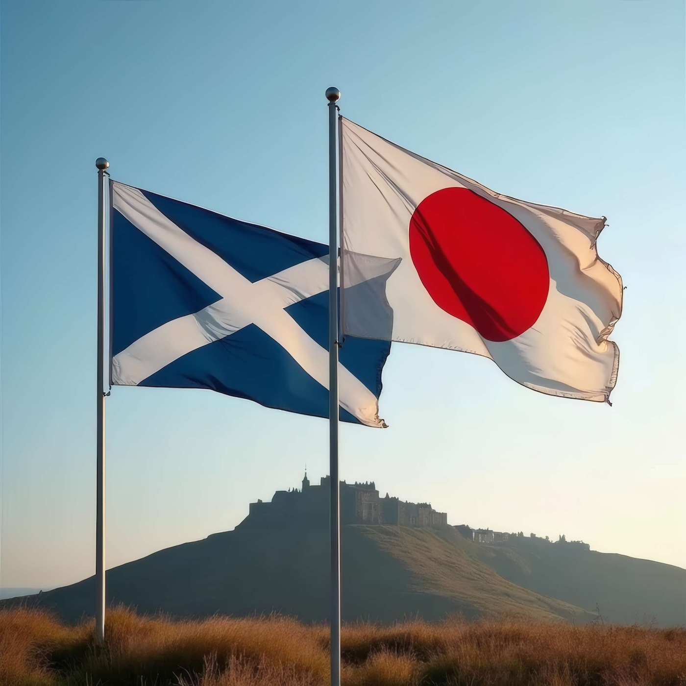

スコットランド・ニュース - Japanese Edition of Scottish News

20250326 配信
Your browser does not support the audio element.
1. スコットランド国立記録の30年にわたる窃盗事件解明⚡
The 30-year quest to catch a national records thief
https://www.bbc.com/news/articles/ce8v7rr8gj2o
2. スコットランド西ダンバートンシャーの地域支援削減決定に関する報道⚡
Decision to cut 'lifeline' service funding branded 'grave mistake'
https://www.heraldscotland.com/news/25035648.funding-cut-lifeline-service-branded-grave-mistake/?ref=rss
3. グラスゴーで発生した16歳少年殺害事件：14歳少年が過失致死罪を認める⚡
Boy, 14, admits killing gang rival in row over £50
https://www.bbc.com/news/articles/c8j0zxrpy78o
4. スコットランドの飲料メーカーAG Barr、ストラスモアブランド廃止と工場閉鎖を発表⚡
Jobs on line as AG Barr says Scottish plant 'no longer sustainable'
https://www.heraldscotland.com/news/25035757.jobs-risk-ag-barr-says-plant-no-longer-sustainable/?ref=rss
5. エディンバラのエルシー・イングリス像建設に反対の声
‘A cultural embarrassment’: anger as male sculptor commissioned for statue of suffragist
https://www.theguardian.com/global/2025/mar/16/anger-male-sculptor-commissioned-statue-suffragist-edinburgh-elsie-inglis
6. イギリス、イビサ島やコルフォ島より気温上昇 春分の日を前に
UK weather: temperatures in southern England could hit 19C this week
https://www.theguardian.com/uk-news/2025/mar/16/uk-weather-warmer-temperatures-southern-england-spring-equinox
7. スコットランドの新国立公園指定：賛否両論と将来展望
National parks should unite, not divide, communities | Letter
https://www.theguardian.com/environment/2025/mar/16/national-parks-should-unite-not-divide-communities
8. スコットランド辺境の村、ウラプールに生まれたナイトクラブ「Baile/Baile」
A hike, a swim, then a full-on rave: is this Britain’s most remote club night?
https://www.theguardian.com/music/2025/mar/17/hike-swim-rave-britains-most-remote-club-night-ullapool-baile
📄 エピソードテキストを見る